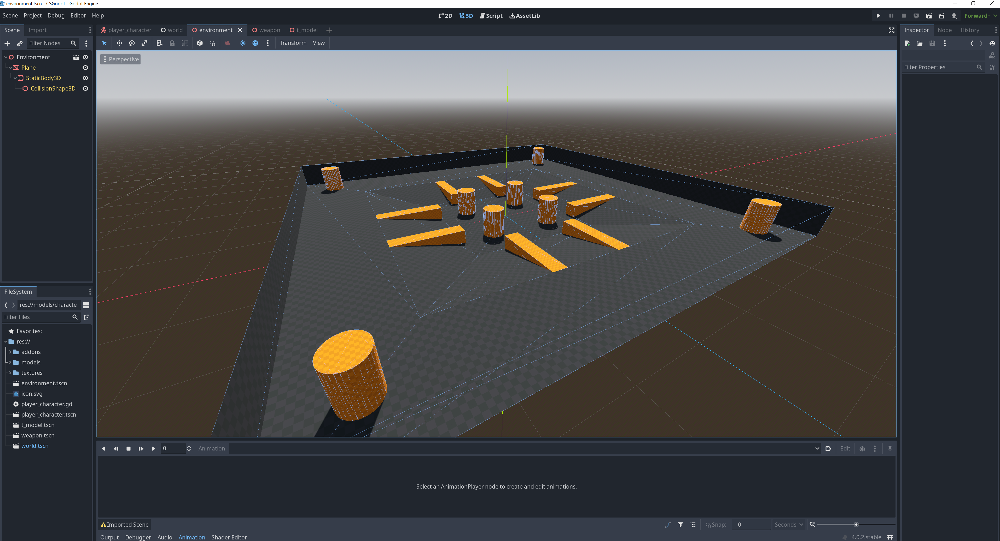
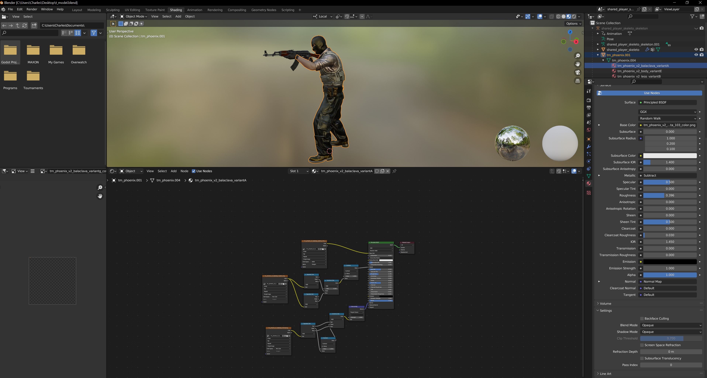
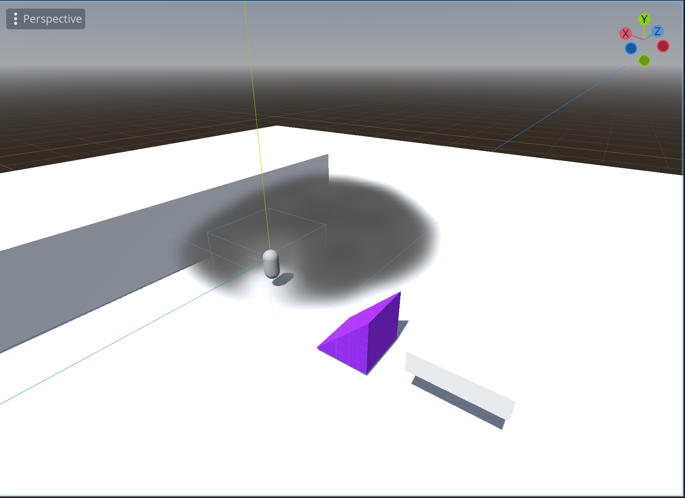

Andrew Shen, Charles Liu, Lena Kushigemachi, Ryan Chan
Deliverables
In our proposal, by the end of week 2, our goals were to find and create assets and implement smoke physics. We created a basic sandbox environment that is able to handle user input and character animations. We imported realistic player models complete with texturing that was done with Blender. We also experimented with implementing volumetric smokes in Godot. After learning the basics of Godot and doing research in creating FPS games, these are our results thus far.
Environment Creation
We were able to create a basic environment for testing with some basic lightning and collision detection by first creating it in Blender and then importing it into Godot. Our final goal is to create a map that is similar to the ones in CSGO.
Player Controls and Animations
We experimented a lot with player movement and animations. Since we want this game to replicate CSGO, we attempted to find the appropriate character models and animations. Luckily, we were able to find references to the models and animations used in CSGO and using Blender, we rigged and animated the keyframes to create a reload animation. However, we quickly realized that attempting to animate every possible movement would be overwhelmingly time consuming, so as of now, we have decided to only animate the reload animation. This might change in the future if we have extra time. We implemented player movement by following basic kinematics equations and mapped player movement to user input in Godot.


Texturing
We were also able to find the textures used by CSGO, so we mapped the textures to their corresponding models in Blender and imported it into Godot. This meant that we had to first learn how to texture in Blender and using what we learned in class about normal maps, specular, and roughness, we adjusted parameters accordingly to create realistic renders.
Smokes
We drew heavy inspiration from YouTube videos and Godot tutorials to figure out how we might accurately simulate smokes in Godot. Luckily, Godot 4.0 has recently added volumetric fog and volumetric lighting, which we are able to manipulate and texture to make it look realistic. We learned how to manipulate the smoke by changing its density in order to give the appearance of smokes moving when objects pass through them which lets us model the behavior of objects or players passing through the smoke.

Mockup
Currently, we have a working demo where users can control a player and experiment with shooting the weapon and reloading it in a small environment. We also were able to replicate creating volumetric smokes in a separate environment, which we plan to integrate into our mockup. We are able to interact with the smoke in simple ways such as walking through the smoke with a decreased depth of view.
Future Plans
So far, we have made pretty good progress on relative to our stated work plan. In the future, we plan to implement multiplayer with bullet physics so that we can transition from a sandbox type environment into an actual game loop. This will include creating a UI for hosting and joining games and health tracking. We also plan to integrate smokes, which includes throwing them and interacting with them. We will start to implement features that will bring the game together so that it feels like a real FPS.
Updates to Work Plan
Week 3:
- Integrate smoke physics and animations
- Implement bullet physics
- Create game loop and incentive system with multiplayer
Week 4:
- Add sound effects
- Finish creating final environment
- Finish adding animations
- Finish adding textures
- Ensure desired interactions work as expected
- Conduct integration tests